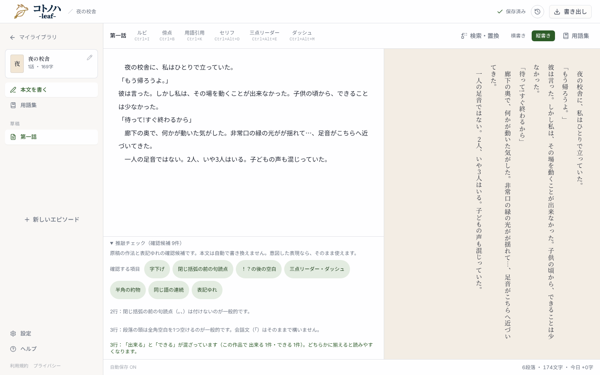
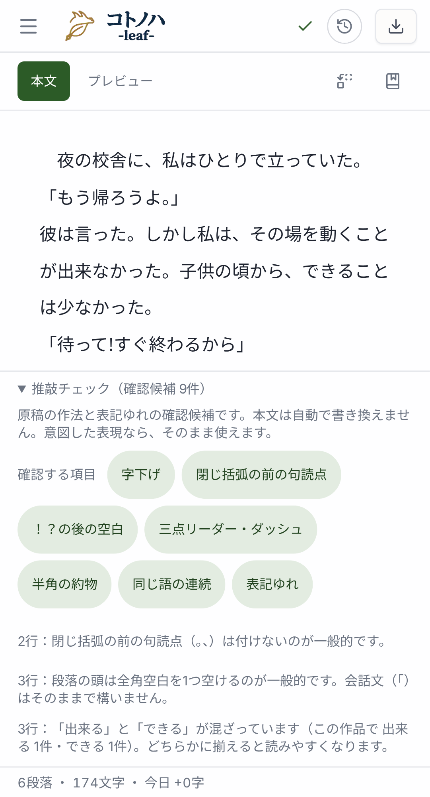
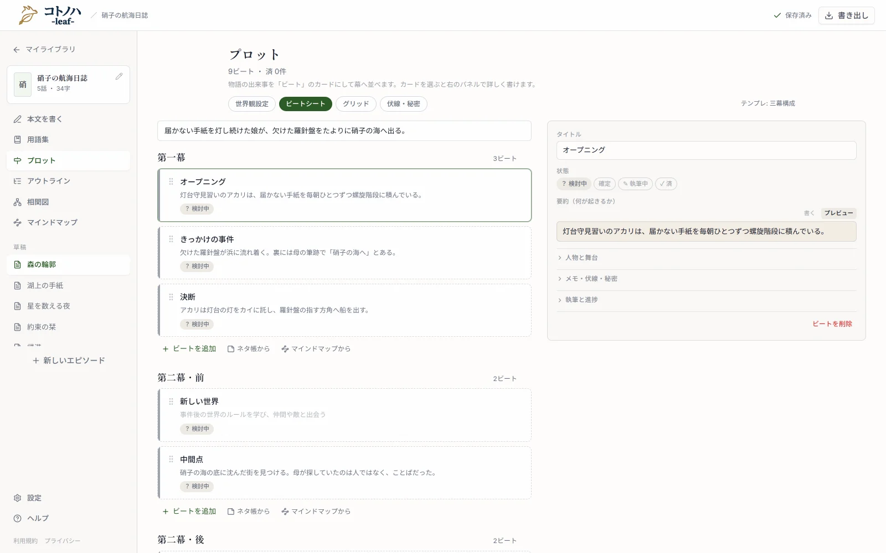

自動保存 ON8段落 ・ 238文字 ・ 今日 +0字
小説の推敲を、執筆画面とは別の「推敲」画面に移します。指摘ごとに「直す」か「このまま」かを選び、直すと決めたものだけを執筆画面に出します。番号は design.md の UI 節と対応しています。



推敲画面そのものは撮影できません。無料会員以上の画面で、撮影はゲストで動くためです。同じ作りの演出エディタも同じ理由で撮れません。代わりに LP 用のプロット画面の画像（public/lp/shots/plot.webp）を参考に載せています。